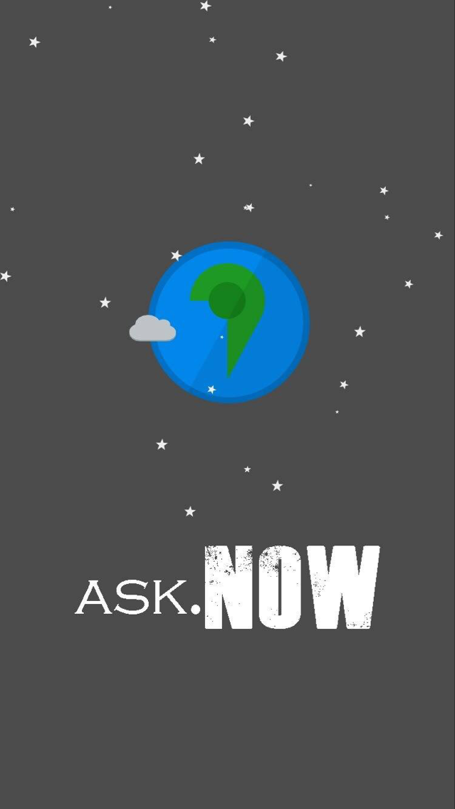

-
- Experience. 项目与工作经验
团队项目
-
Usay 项目主页
针对大学生辩论设计开发的平台，产品线拥有iOS端、Android端、Web端。
在团队中担任负责人，负责产品经理兼项目经理的工作。
-
智能搬运轮型机器人项目
大学生创新项目，旨在开发出一款互联网+的多功能的智能搬运机器人。
校级项目、实验中心项目，在团队中担任负责人，负责上位机的开发工作。
-
植树网图书交换平台
大学生创新项目，旨在开发出一款基于LBS的大学生图书交换平台。
省级项目，在团队中负责服务端的开发工作。
个人项目
-
CANVAS——Draw on the Web（2015.11）
https://github.com/airingursb/canvas个人写成的电子书，每节都附带有若干 Demo，已上架极客学院 Wiki。
GitHub 上 Star 105 Fork 15
-
微信小程序：咩咩单词（2017.2） 源代码
单词记忆类微信小程序，使用简单效果优良，该产品已经上线，不断迭代开发中
-
晴宝：最简洁的天气应用（2016.7） 源代码
基于 Ionic2 构建的 Android & iOS App，已上架 App Store，GitHub 上 Star 82 Fork 25
-
Airing的个人博客（2014.12 - 至今）
http://ursb.meHexo主题修改，内容维护，现日均浏览量 100+
-
微信聊天界面生成器H5版（2015.8）
https://github.com/airingursb/ez设计简单、内容完善的微信聊天页面生成器，使用简单效果优良。
GitHub 上 Star 80 Fork 7
-
Bilibili 数据分析项目（2016.2）
知乎 | B站2000万用户分析Python 爬虫与 Web App 数据报告——抓取并分析B站数据。
并开发 Web App 展示成果。
-
bilibili 用户爬虫
https://github.com/airingursb/bilibili-userPython 写成的爬虫，用来爬取B站用户信息。GitHub 上 Star 319 Fork 107
-
bilibili 视频爬虫
https://github.com/airingursb/bilibili-danmuPython 写成的爬虫，用来爬取B站视频信息。GitHub 上 Star 53
-
bilibili 弹幕下载器
https://github.com/airingursb/bilibili-danmu视频爬虫的衍生产品，用于下载B站视频的弹幕。GitHub 上 Star 41
-
bilibili数据报告
https://github.com/airingursb/bilibili-reportH5 + jQuery + CSS3 实现的 Web APP。GitHub 上 Star 69
-
-
EMPs（2016.4） https://github.com/airingursb/EMPs
智能车可视化系统。
可以在网页上查看小车的行驶路径、小车的速度变化折线图等图表信息。
-
FeedMe（2015.10 - 2016.4）
http://ursb.me/FeedMeiOS 与 Apple Watch 平台的单词学习App
-
AiringGo（2016.4）
http://ursb.me/AiringGo基于 JS 实现的五子棋 AI，已上架 Chrome Store
-
wechat-translator（2015.11）
https://github.com/airingursb/wechat-translator基于WeChat公众平台的英汉辞典（Java版）
-
2048 x 2048（2015.8）
http://ursb.me/2048/plus使用 H5 Canvas 实现的 web app 小游戏。
-
EqumentMS（2014.8）
https://github.com/airingursb/EqumentMS使用 ASP.NET 实现的实验器材管理系统。
-
姓名大乐斗（2014.4 - 2014.6）
https://github.com/airingursb/nameplayer有趣的 PC 桌面联机小游戏（VB版）
-
- Prize. 获得奖项
-
2016.11 2016全国大学生移动应用创新赛CMAIT优胜奖：FeedMe
-
2016.11 第25届广东省高校杯软件作品设计竞赛一等奖：FeedMe
-
2016.09 国家奖学金
-
2016.09 广东省大学生计算机设计竞赛一等奖：激光雷达云地理信息采集网站
-
2016.09 广东省大学生计算机设计竞赛二等奖：RPG游戏课件的设计与开发
-
2016.09 广东省大学生计算机设计竞赛三等奖：养成类单词学习APP
-
2016.09 广东省大学生计算机设计竞赛三等奖：植书网
-
2016.08 “ADI杯”广东省大学生电子设计竞赛二等奖：基于C/S闭环控制的智能药柜系统
-
2016.07 第十一届全国大学生“恩智浦”杯智能汽车竞赛，华南赛区摄像头组二等奖
-
2016.06 广州市优秀学生
-
2015.06 第二届广州创客马拉松第三名
-
2015.06 第二届广州创客马拉松最佳交互设计奖
 -
2016.06 广州大学第一届计算机设计大赛，个人提交14项作品参赛
获一等奖1项，二等奖4项，三等奖6项，优秀奖3项。
- 2014.10 广州大学一等奖学金
- 2014.10 广州大学优秀学生
- 2014.11 广州大学教育学院多媒体课件比赛专业组一等奖
- 2015.10 广州大学二等奖学金
- 2015.10 广州大学优秀学生
- 2015.11 广州大学教育学院多媒体课件比赛专业组一等奖
- Skill. 技能清单
Web 前端
-
HTML / CSS
能够编写语义化的 HTML，模块化的 CSS，完成较复杂的布局
-
JavaScript
熟悉原生 Javascript，能脱离 jQuery 等类库编码
能运用模块化、面向对象的方式编程
移动开发
-
Swift
熟练使用 Swift 语言进行 iOS 开发。能实现基本的动画与业务需求。
-
WatchKit
熟练使用 Swift 开发简单的 Apple Watch 应用。
-
微信开发
熟悉微信小程序开发，以及微信接口设计、开发和调试工作。
-
Angular2
能运用 Ionic2 开发基本的 Android 与 iOS 应用。
网络开发
-
Linux
熟悉 Linux 开发环境、 Linux 服务器环境搭建部署
-
Java
熟悉 Struts、Hibernate、Spring 框架的原理与使用。
-
Python
熟悉 Flask 框架，能使用 Flask 自主建站。
熟悉 requests 与 Scrapy，能够熟练实现网络请求与制作网络爬虫。
数据分析
-
R & Python & SPSS
熟悉 R 语言的使用
熟悉 pandas 与 numpy 的使用
熟悉 SPSS 的使用
热衷 kaggle，撰写过关注度上千的数据报告
-
统计学
熟悉统计学的相关内容，会使用一定的统计方法
UI设计与多媒体开发
-
Axure
熟悉 Axure 、墨刀 与 Balsamiq Mockups 等原型制作工具的使用。
-
Sketch
能熟练使用 Sketch 进行 Web 端、移动端的 UI 设计与标注。
-
Photoshop
能够使用 Photoshop 进行图片编辑。
-
Flash
能够熟练使用 Flash 制作产品宣传动画。
-
Premiere
能够使用 Premiere 与 Final Cut Pro 进行影片编辑。